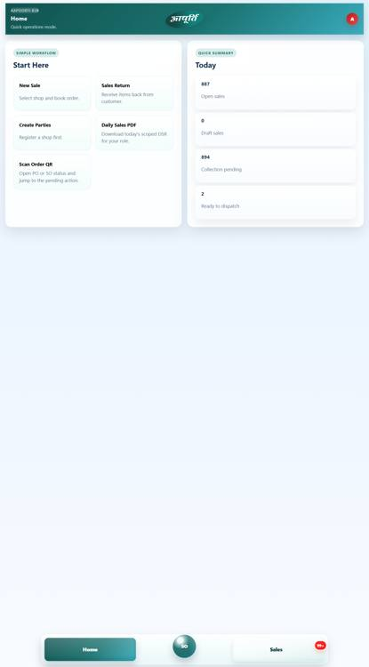
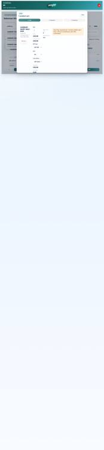
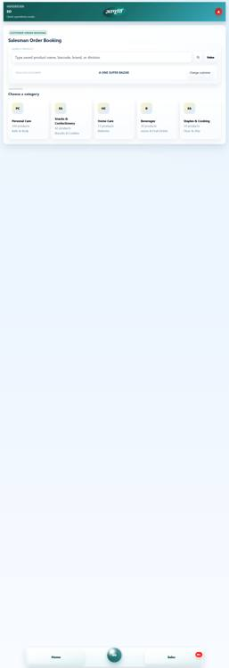

Coverage: delivered source code, top-to-bottom business flow, every application section, user roles, records, APIs, database, storage, installation, deployment, security, backup, testing, maintenance and acceptance
This is the formal source-code and operational handover reference for the Aapoorti B2B Sales Management System. It describes the application as implemented in the delivered repository and is intended for the client’s business users, system administrators, developers, security reviewers and future maintenance vendor. It covers the delivered components, what each screen does, data entered, actions available, record movement, role restrictions, status meanings, configuration, API routes, database tables, proof files, reports, installation, deployment, security, validation, maintenance, recovery and acceptance.
.env may contain credentials and is intentionally not reproduced. Never place real database or object-storage secrets in a user manual or commit them to Git.Aapoorti B2B is an internal procurement, sales, inventory, payment, warehouse and delivery operating system. A single shared snapshot supplies the frontend with role-filtered users, masters and operational records. Users enter purchase and sales carts, upload proofs, receive goods, reserve and dispatch stock, reconcile payments and track every order through status, ledger and notes.
| Layer | Implementation | Location / purpose |
|---|---|---|
| Web frontend | React 19, TypeScript, Vite 7, Axios, jsPDF, QRCode, XLSX | apps/web; responsive single-page application, forms, dashboards, PDF/Excel/QR features |
| API | Express 4, TypeScript, Multer | apps/api; authentication, role checks, validation, workflow endpoints and file uploads |
| Database | PostgreSQL 16 compatible, pg pool | Schema in postgres/init; API creates schema, compatibility columns, indexes and seed records on startup |
| Shared domain | TypeScript package | packages/domain; roles, statuses and record interfaces shared by web and API |
| Proof storage | Local filesystem or private Cloudflare R2 | Payment, delivery, receipt and return proofs; API keeps the same /uploads/... URLs for both modes |
| Deployment | Render blueprint; Vercel frontend option; Docker Compose for local PostgreSQL | render.yaml, vercel.json, docker-compose.postgres.yml |
POST /auth/login.localStorage.Authorization: Bearer <token>.| Element | Working |
|---|---|
| Sidebar / bottom navigation | Displays only views permitted by the union of the user’s roles. It can be collapsed and adapts for mobile. |
| Simple / full mode | Simple mode hides secondary operational views for most roles. Delivery execution roles are forced into the simpler view set. |
| Home metric cards | Counts products, parties, users, payment exceptions, partial/flagged receipts, inventory, open sales and delivery tasks. Cards navigate to the relevant module. |
| Panels and two-column layouts | Reusable containers organize forms, tables, summaries and responsive mobile stacking. |
| Badges | Pending counts and operational states appear beside navigation labels and records. |
| Notifications | Success and error messages are shown after API actions; the snapshot refreshes after successful mutations. |
| Date controls | Many operational entries accept an operation date; the backend normalizes date-only input to an ISO timestamp. |
| QR tools | PO/SO QR cards open a role-scoped status page. Users can download QR PNG/status PDF and scan via camera, image or pasted link when browser support allows. |
| Invoice tools | Purchase and sales groups can create tax invoices or non-GST estimates, print, download PDF and share through supported browser sharing/WhatsApp flows. |
| Exports | Operational tables/reports can produce PDF and Excel workbooks; Accounts also has a standalone Excel Maker. |

| Role | Full-mode visible sections | Primary responsibility |
|---|---|---|
| Admin | Home, Users, Warehouses, Products, Parties, Purchase, Sales, Payments, Receipts, Ledger, Stock, Delivery, Settings, Notes | Master data, configuration, oversight and selected operational administration |
| Warehouse Manager | Home, Receipts, Stock, Ledger, Notes | Inbound checking, inventory visibility, docket/dispatch actions |
| Delivery Manager | Home, Delivery, Ledger, Notes | Inbound/outbound planning, assignment, merging and consignments |
| Purchaser | Home, Parties, Purchase, Purchases, Purchase Return, Ledger, Notes | Supplier master, PO booking/update, purchase returns and payment submission |
| Accounts | Home, Parties, Purchases, Sales, Payments, Excel Maker, Goods Warrants, Ledger, Stock, Notes | Payment reference control, advances, verification, ledger, vouchers and analysis |
| Sales | Home, Parties, Sales, Sales Orders, Sales Return, Ledger, Notes | Shop onboarding, catalogue sales, collection capture and sales returns |
| Collection Agent | Home, Sales Orders, Payments, Ledger, Notes | Outstanding collection follow-up and collection status |
| Data Analyst | Home, Purchases, Sales Orders, Stock | Read-oriented reporting and operational analysis |
| In Delivery | Home, Current Delivery, New Assignment, Notes | Inbound/self-collection execution |
| Out Delivery / Delivery | Home, Current Delivery, New Assignment, Notes | Outbound delivery execution |
A user may have multiple roles. Visible screens are the union of role views, while backend actions still require at least one specifically allowed role. Warehouse IDs scope relevant records. Admin access does not automatically bypass every operational endpoint; the endpoint matrix later in this document is authoritative.
Elements: role-specific greeting and navigation cards; business metrics; pending badges; QR scanner launcher; recent or pending work; shortcuts to payments/orders/stock/delivery; Accounts purchase-advance entry; daily sales report PDF action where available.
Use: start each shift here, open the largest pending queue, and return after completing a task to verify the count reduced.
Create fields: Username, Name, Mobile, Roles (multi-select), Warehouses (multi-select), Password. Default password in the form and API is 1234 when not changed.
Directory columns: Username, Name, Roles, Warehouses, Mobile. A blank warehouse list means broad/all-warehouse visibility in current mapping.
Action: Create user. There is no user edit/deactivate endpoint in the current UI/API.
Create fields: Code/ID, Name, City (initially Bhopal), Type (Warehouse or Yard), Address.
List columns: Code, Name, City, Type. Warehouse codes are referenced by products, orders, inventory, receipts, dockets, consignments and scoped users, so create carefully.
Core fields: SKU, Name, Division, Department, Section, Category, Sub-category, Unit, default GST rate (NA/0/5/12/18/40), tax mode (NA/Exclusive/Inclusive), default weight kg, tolerance kg, tolerance %, allowed warehouses, quantity slabs, RSP and MRP.
Extended import fields supported by the record/importer: remarks, category 6, site name, barcode, supplier name, HSN code, article name, item name, brand, short name and size.
Actions: create, edit, delete; paste/import bulk rows; upload CSV/XLS/XLSX; download/use template where exposed; search/filter product directory. During startup the backend infers missing weights from product text such as grams, kilograms, litres, millilitres, additive/free packs and multipacks.
Types: Supplier and Shop.
Fields: Type, Name, GST Number, Bank Name, Bank Account Number, IFSC Code, Mobile Number, Address, City, Contact Person; record model also supports delivery address/city, latitude, longitude and location label.
Actions: create, edit, filter by supplier/shop, review vitals and use a party in purchase, sales, payment and delivery workflows. Current create/update API requires the main identity, GST, banking, contact and address fields.
Header fields: supplier, receiving warehouse, delivery mode (Dealer Delivery/Self Collection), payment mode, cash timing when applicable, operation date, order note, optional location and optional advance payment.
Line/catalog fields: product/SKU search, quantity, rate, taxable amount, GST rate, GST amount, tax mode and previous-rate context. Cart mode allows multiple products under one public cart/order group.
Automatic calculations/effects: expected weight = product default weight × ordered quantity; tax totals are normalized; initial status represents an order placed pending delivery; a purchase ledger entry is created/updated; advance payment can be recorded; a PO/group ID is generated.
Actions: add/remove cart items, submit order, reopen/update an eligible group from Purchases, print/download/share invoice or estimate, view/download QR/status.

Elements: grouped PO/cart rows, supplier, items, quantity/value, delivery status, payment status, outstanding amount, created date, search/filter, pending badges and analytics variants for Accounts/Data Analyst/Admin.
Actions by permission: Purchaser opens an order for update; authorized users view status QR, PDF/invoice and WhatsApp/share output; Accounts reviews payment position; analysts use summaries without editing the operational order.
Fields: mode (Adhoc/Planned), optional linked purchase group and line, supplier, warehouse, product, quantity, rate, reason, note and optional photo/proof.
Reasons: Rate Difference, Damage, Quality Issue, Wrong Item, Excess Quantity, Other. Multiple lines share a generated return-group ID. Only Purchaser creates purchase returns.
Customer step: choose existing shop or open the party-creation path. Shop selection carries GST/contact/delivery context.
Catalogue elements: text search, category/brand/product browsing, optional speech recognition, product cards, rate pop-up, quantity, available stock, warehouse, add-to-cart and cart badge/drawer.
Checkout fields: shop, warehouse, line quantities and rates, CD/TOD rate and discounts, taxable amount, GST rate/amount/tax mode, payment mode/cash timing, collected or advance amount, delivery mode (Self Collection/Delivery), delivery charge, operation date and note.
Actions: new sale, customer select, search/add/remove/change cart lines, summary, payment step, finalize, continue shopping, create invoice/estimate, download/print/share PDF, QR status, and later reopen via Sales Orders when permitted.
Automatic effects: stock is reserved/allocated where available; delivery charge applies once per grouped delivery order; status begins Booked or Self Pickup; ledger entry is created; an advance payment may be created; insufficient stock can produce a probationary-sales record with pending quantity for later clearing.

Elements: grouped order/customer rows, line and amount totals, fulfilment status, payment state, outstanding collection, collection assignment and notes. Role-specific analyst and collection views are used.
Actions: update eligible order, record collection/payment, assign collection agent through an operational note, log override note, open QR status, invoice print/download/share. Warehouse dispatch actions update readiness and docket state through the warehouse operations views.
Fields: mode, optional linked sales group/line, shop, warehouse, product, quantity, rate, reason, note and photo/proof.
Effect: records a grouped return audit trail and can create inventory with source type Sales Return. Only Sales creates sales returns.
The screen changes by role.
Payment modes: Cash, Card, UPI, NEFT, RTGS and Cheque, subject to Admin settings. Cash timing values are In Hand, At Delivery and Later.
Verification states: Pending, Submitted, Verified, Rejected, Disputed, Resolved. Verified/settled amounts reduce the linked ledger pending balance; collection status supports None, Assigned, Collected and Reconciled.
Proof: JPEG, PNG, WebP or PDF; default maximum 8 MiB. Proof URL remains /uploads/payment-proofs/<filename>.
Fields: purchase order, warehouse, received quantity, actual/gross weight, container weight, computed net weight, weighing proof, cash proof when relevant, note, operation date and explicit partial confirmation.
Generated values: GRC number, receiver identity, ordered/pending quantity, expected weight, variance kg, partial flag and exception flag.
Actions: receive, upload proof, confirm partial, flag/unflag/update note. Accepted quantity updates the PO and inventory. Weight variance is tested against product tolerance in kg/percent.
Summary fields: warehouse/code/name, SKU/product, available, reserved and blocked quantities. Analyst/Admin/Accounts variants provide aggregated views; Warehouse Manager sees operational stock.
Sources: accepted purchase receipts and sales returns. Sales reservations reduce usable availability; exceptions may stay blocked. Probationary sales separately identify quantities sold before stock was available.
Fields: ledger ID, side (Purchase/Sales), linked order/group, party, goods value, paid amount, pending amount and status (Pending/Partial/Settled).
Working: the ledger is an operational reconciliation view derived/maintained from orders and payments. It is not a full double-entry accounting general ledger. Accounts has richer filters/workspaces; other permitted roles receive scoped visibility.
Home: pending counts, warehouse selector and navigation to inbound or dispatch queues.
Inbound fields/actions: purchase-side linked order IDs, dealer/self-collection mode, internal/external transport, from/to, assignee, pickup/drop times, route hint/stops, vehicle, freight, payment action, cash requirement, status, proofs and date.
Dispatch fields/actions: select ready sales dockets/orders, create or update tasks, assign delivery user(s), group/merge compatible delivery tasks, create consignments, set warehouse, internal/external transport, vehicle/freight and route stops.
Task states: Planned → Picked → Handed Over → Delivered. Delivery dockets and consignments have their own readiness/pickup/delivery states.
Elements: role/user-filtered assignments, order and route stops, supplier/shop and warehouse locations, product summary, amount/payment requirement, acceptance/action buttons, proof uploads and last-action time.
Typical execution: open New Assignment → accept/mark Picked → reach supplier or warehouse → check/pick items → record payment delivered/collected when required → upload weight/cash/delivery proof → Handed Over → Delivered. In Delivery focuses purchase/inbound tasks; Out Delivery/Delivery focuses sales/outbound tasks.
Docket fields: docket ID, sales order, shop, SKU, warehouse, quantity, gross/container weight, proof, optional consignment and status (Pending Packing, Ready, Tagged, Pending Pickup, Out for Delivery, Delivered).
Consignment fields: ID, docket IDs, warehouse, assigned person, total weight, status (Draft, Ready, Pending Pickup, Out for Delivery, Delivered), creator/date.
Fields: outlet (Awadhpuri, Koh E Fiza, New Market, Kolar, Indrapuri), issued to, issuer name, received amount, warrant amount/denomination, Cash/Cheque, cheque number, cash collected date, issue date/start, valid-through date and note.
Actions: create one, bulk-create denominations with monthly limits, edit, clear list, render/print warrant document and use the configured logo endpoint. Warrant number is unique.
A standalone utility converts pasted/structured text into a downloadable Excel workbook. It is client-side and uses the XLSX library; use it for ad-hoc tabular output, not as a replacement for database backup.
Payment method rows: code, label, Active checkbox and Allows Cash Timing checkbox.
Delivery charge: model (Fixed/Per Km) and numeric amount. Current sales calculation applies the configured amount to delivery orders; the grouped order carries it once.
Defaults on a new database: Cash/Card/UPI/NEFT/RTGS active, Cheque inactive; Cash allows cash timing; fixed delivery amount 350.
Fields: Entity Type, Entity ID, Visibility, Note. Entity types: Purchase Order, Receipt, Sales Order, Payment, Delivery, Inventory, Party. Visibility: Restricted, Operational, Management.
List: entity, ID, note, author and visibility. Notes are the human-readable audit/exception trail; current enforcement primarily filters snapshot data/roles rather than implementing a complete record-by-record confidentiality policy.
| Record | States |
|---|---|
| Purchase | Draft; Order Placed - Pending Delivery; Pickup Assigned; In Pickup; Order Delivered - Warehouse Check; Pending Payment; Ready for Dispatch; In Transit; Partially Received; Received; Closed; Cancelled |
| Sales | Draft; Booked; Ready for Dispatch; Pending Pickup; Out for Delivery; Self Pickup; Delivered; Closed; Cancelled |
| Payment verification | Pending; Submitted; Verified; Rejected; Disputed; Resolved |
| Collection | None; Assigned; Collected; Reconciled |
| Delivery task | Planned; Picked; Handed Over; Delivered |
| Docket | Pending Packing; Ready; Tagged; Pending Pickup; Out for Delivery; Delivered |
| Consignment | Draft; Ready; Pending Pickup; Out for Delivery; Delivered |
| Inventory lot | Available; Reserved; Blocked |
| Ledger | Pending; Partial; Settled |
| Probationary sale | Pending; Cleared |
| Record | Important stored elements |
|---|---|
| User | ID, username, full name, primary role, roles array, warehouse IDs, mobile, active, created time |
| Warehouse | Code, name, city, address, Warehouse/Yard, created time |
| Product | SKU, hierarchy, unit, GST/tax mode, weight/tolerances, allowed warehouses, slabs, barcode/HSN/brand/size/RSP/MRP metadata |
| Counterparty | Supplier/Shop, GST, banking, mobile, address/delivery address, contact, location coordinates/label |
| Purchase order line | PO/cart IDs, supplier, SKU, purchaser, warehouse, ordered/received quantities, rate/tax/total, expected weight, delivery/payment, note/status |
| Sales order line | SO/cart IDs, shop, SKU, salesman, warehouse, quantity/rate, CD/TOD, tax/total, payment/delivery, charge, note/status |
| Payment | side/order, kind Order/Advance, counterparty, amount, mode/timing, reference/voucher/UTR/proof, verification and collection data |
| Receipt | GRC, PO, warehouse/receiver, quantities, actual/container/net/expected weights, variance, proof, partial/flagged, notes |
| Return | group/line, mode, linked order, party, warehouse, SKU, quantity/rate, reason, note, photo, creator |
| Inventory lot | source order/type, warehouse, SKU, available/reserved/blocked, status |
| Delivery task | side, order IDs, consignment, mode/transport, vehicle/freight, from/to/assignee, route stops/times, payment/cash/proofs, status |
| Docket/consignment | sales packing and grouping records with quantities, weights, warehouse, assignee and dispatch status |
| Ledger/note/warrant | financial summary, operational audit narrative and Accounts voucher records |
All endpoints except root, health, login, proof GETs and goods-warrant logo require a valid Bearer session either directly or through a role check. Mutation wrappers generally return HTTP 201 on success and 400 with {message} on validation/authorization failures.
| Method and route | Allowed role(s) / purpose |
|---|---|
GET /, /health | Public service/version/health and proof-storage mode |
POST /auth/login; POST /auth/logout | Session creation/deletion |
GET /snapshot | Any authenticated user; returns role/warehouse-filtered application snapshot |
POST /users | Admin |
POST /warehouses | Admin |
POST/PATCH/DELETE /products...; bulk and upload routes | Admin |
POST/PATCH /counterparties... | Accounts, Purchaser, Sales |
POST /settings | Admin |
POST /purchase-orders, /purchase-orders/cart; PATCH /purchase-orders/:id | Purchaser |
POST /sales-orders, /sales-orders/cart | Sales |
PATCH /sales-orders/:id | Sales for commercial editing; Warehouse Manager for permitted dispatch/status work |
POST /sales-orders/reset-operational | Admin; destructive operational reset, use only with backup |
POST/PATCH /payments... | Accounts, Purchaser, Sales, Collection Agent; Accounts requires reference and owns verification |
POST/DELETE /payments/purchase-advance | Create: Accounts. Clear: Admin or Accounts |
POST /payments/verify | Accounts |
POST /goods-warrants, /bulk; PUT item; DELETE all | Accounts |
POST /receipt-checks | Warehouse Manager |
PATCH /receipt-checks/:id | Warehouse Manager, Accounts |
POST /purchase-returns | Purchaser |
POST /sales-returns | Sales |
POST /delivery-tasks | Delivery Manager, Accounts |
PATCH /delivery-tasks/:id | Warehouse Manager, Delivery Manager, In Delivery, Out Delivery, Delivery |
POST /delivery-tasks/merge | Delivery Manager |
POST /delivery-dockets | Warehouse Manager |
POST /delivery-consignments | Delivery Manager |
POST /notes | Warehouse Manager, Delivery Manager, Purchaser, Accounts, Sales, delivery execution roles |
| POST proof upload routes | Payment: Accounts/Purchaser/Sales/Collection Agent; Delivery: delivery roles; Receipt: Warehouse Manager; Return: Purchaser/Sales |
GET /uploads/:category/:fileName | Static/local or R2-backed proof delivery; currently not protected by record-level authorization |
| Table | Purpose | Main relationships |
|---|---|---|
users, sessions | identity, roles, warehouse scope and session tokens | users referenced as creators, purchaser/salesman/receiver; sessions → users |
warehouses, products, counterparties, settings | master/configuration data | referenced by almost all transaction records |
purchase_orders, sales_orders | commercial order lines grouped by cart ID | party, product, user, warehouse; connect to payments, receipts, returns, delivery and ledger |
payments, ledger_entries | payment evidence/reconciliation and financial summary | side + linked order/group |
receipt_checks, inventory_lots, probationary_sales | receiving, stock and shortage exception trail | purchase/sales order, warehouse, product |
purchase_returns, sales_returns | grouped returns | optional linked order/line, party, warehouse, product |
delivery_tasks, delivery_dockets, delivery_consignments | transport execution, packing and grouping | order IDs, warehouse, consignment/docket links |
goods_warrants, note_records | Accounts vouchers and operational audit notes | warrant unique number; note entity type/ID |
Indexes cover common supplier/shop/status/date lookups, payments, receipts, inventory, ledger, task assignee/status, notes and unique docket/warrant constraints. The API runs compatibility ALTER TABLE ... ADD COLUMN IF NOT EXISTS statements and selected backfills on startup.
GET /snapshot is the frontend read model. It returns metrics, settings and arrays for all domain records, filtered according to current roles, assignee identity and warehouse scope. UI state should never be treated as the security boundary; endpoint role checks and snapshot filtering both matter.
| Category | Local subdirectory / URL | Accepted types |
|---|---|---|
| Payment | payment-proofs | JPEG, PNG, WebP, PDF; size controlled by MAX_UPLOAD_BYTES |
| Delivery | delivery-proofs | |
| Receipt | receipt-proofs | |
| Return | return-proofs |
With complete R2 credentials, new proofs are written to private Cloudflare R2 and read through the API. A local file with the same name is checked first to support migration. Product CSV/workbook uploads remain temporary local files under the uploads CSV directory.
| Variable | Required / default | Meaning |
|---|---|---|
NODE_ENV | development | Enables production HSTS and hides development database path |
PORT | 8080 | API listening port |
DATABASE_URL | Production recommended | Complete PostgreSQL connection string; overrides individual POSTGRES values |
POSTGRES_HOST/PORT/DB/USER/PASSWORD | Local defaults in example | Used when DATABASE_URL is absent |
PGSSLMODE / PGSSL | optional | Enables TLS; Render URLs are detected automatically |
PGPOOL_MAX | 10 | PostgreSQL pool maximum connections |
PG_IDLE_TIMEOUT_MS | 30000 | Idle connection timeout |
UPLOADS_DIR | uploads | Local upload root / fallback and CSV staging |
ALLOWED_ORIGINS | http://localhost:5173 | Comma-separated CORS origins; avoid wildcard in production |
REQUEST_BODY_LIMIT | 2mb | JSON body limit |
MAX_UPLOAD_BYTES | 8388608 | Product import and proof upload size limit |
R2_ACCOUNT_ID | all four credentials or none | Cloudflare account |
R2_ACCESS_KEY_ID | secret | R2 API access key |
R2_SECRET_ACCESS_KEY | secret | R2 API secret |
R2_BUCKET_NAME | aapoorti-proofs | Private proof bucket |
R2_OBJECT_PREFIX | proofs | Object key prefix |
VITE_API_BASE_URL | localhost API or browser origin fallback | Frontend build-time API address |
NODE_ENV=development PORT=8080 DATABASE_URL=postgresql://<user>:<password>@127.0.0.1:5432/aapoorti_b2b UPLOADS_DIR=uploads ALLOWED_ORIGINS=http://localhost:5173 REQUEST_BODY_LIMIT=2mb MAX_UPLOAD_BYTES=8388608 R2_ACCOUNT_ID= R2_ACCESS_KEY_ID= R2_SECRET_ACCESS_KEY= R2_BUCKET_NAME=aapoorti-proofs R2_OBJECT_PREFIX=proofs VITE_API_BASE_URL=http://localhost:8080
x-powered-by disabled; trust proxy enabled.X-Content-Type-Options: nosniff, X-Frame-Options: DENY, strict referrer policy and a permissions policy.npm install npm run postgres:up npm run dev
Frontend normally runs at http://localhost:5173; API at http://localhost:8080. Verify GET /health returns ok: true and the expected proof-storage mode.
| Command | Purpose |
|---|---|
npm run dev | Runs API and web development servers concurrently |
npm run build | Builds domain, API and web in dependency order |
npm run lint | Runs any workspace lint scripts that exist |
npm run postgres:up/down/logs | Controls the local PostgreSQL Docker service |
npm run import:workbook -w apps/api | Runs the API workbook import utility |
npm run db:clean -w apps/api | Database cleanup utility; inspect and back up before using |
npm install npm run build -w packages/domain npm run build -w apps/api npm run start -w apps/api # frontend npm run build -w apps/web
render.yaml defines an API web service, static frontend, persistent upload disk and PostgreSQL database. Configure production database, exact frontend origin and R2 secrets in the dashboard. Health path is /health. The static frontend rewrites all routes to /index.html.
The root vercel.json installs the domain/web workspaces, builds the domain then web, and publishes apps/web/dist. Set VITE_API_BASE_URL to the deployed Render API before building.
aapoorti-proofs./health reports cloudflare-r2.r2.dev URL for private business proofs. The current API proof GET is itself unauthenticated, so production hardening should add authorization or signed short-lived URLs.pg_dump. Test restore to a separate database.| Symptom | Checks / resolution |
|---|---|
| Invalid credentials | Confirm seeded/created username, password and active state. Password comparison is currently case-insensitive. Rotate the credential rather than sharing it. |
| Session expired/token missing | Log out/in; clear stale localStorage if necessary; confirm Authorization header reaches the API through the proxy. |
| Origin not allowed | Add the exact frontend scheme/host to comma-separated ALLOWED_ORIGINS and redeploy. |
| Database startup failure | Check DATABASE_URL or POSTGRES values, TLS mode, database availability, pool limit and schema privileges. |
| Proof rejected | Use JPEG/PNG/WebP/PDF under MAX_UPLOAD_BYTES. Check storage credentials/disk permissions and /health storage mode. |
| Product import fails | Check CSV/XLS/XLSX headers and required product/warehouse values; confirm upload size; review importer errors. |
| Wrong/no screen | Verify assigned role(s), simple/full mode and warehouse scope. Screen visibility and endpoint permission are separate. |
| Stock does not match | Trace receipt checks, inventory lots, sales reservations, returns, blocked quantities and probationary sales for the same warehouse/SKU. |
| Ledger not settled | Match payment side and linked group/order ID, amount and verification status; rejected/pending proof should not be treated as reconciled. |
| QR camera unavailable | Use image scan, paste the link/code or open through the phone camera. Browser BarcodeDetector support and secure context are required. |
| SPA route 404 in production | Configure static host rewrite of all paths to index.html. |
The client handover should contain a clean repository snapshot or version-control access at one identified release tag/commit. The release must be reproducible from source; generated dependencies, personal browser profiles, local logs and real secrets are not source deliverables.
| Deliverable | Included content | Client verification |
|---|---|---|
| Application source | apps/web, apps/api, packages/domain | Fresh install and production build succeed |
| Database definition | postgres/init/001-schema.sql, 002-indexes.sql and API compatibility migrations | Empty PostgreSQL database initializes on API startup |
| Deployment definitions | Render, Vercel and Docker Compose files | Client environment deploys with client-owned accounts |
| Configuration templates | .env.example, Render/Vercel examples | No live secret exists in the delivered repository |
| Package manifests | Root/workspace package.json files and package-lock.json | Locked dependency install completes |
| Operational utilities | Import, database cleanup and product/sales-history scripts | Each utility’s purpose and risk are understood |
| Documentation | This Word manual, editable HTML source and existing product-flow/blueprint guides | Client confirms the documents are readable and match the release |
| Data transfer, if contracted | PostgreSQL dump plus proof-object export, transmitted separately and encrypted | Restore rehearsal and record-count reconciliation pass |
| Path | Ownership and purpose | Change impact |
|---|---|---|
apps/web/src/App.tsx | Main React application, views, business presentation, forms, invoices, QR and reports | High; changes can affect multiple roles and workflows |
apps/web/src/styles.css | Responsive application styling | Visual/mobile regression risk |
apps/web/src/components | Navigation and reusable UI containers/tables/badges | Cross-screen UI impact |
apps/web/src/utils/excel.ts | Excel workbook generation | Report/export compatibility |
apps/api/src/server.ts | Express startup, middleware, routes, validation and authorization | High; public contract/security boundary |
apps/api/src/db.ts | PostgreSQL initialization, mapping and transactional business logic | Critical; data integrity and workflow transitions |
apps/api/src/object-storage.ts | Private R2 proof-object adapter | Proof confidentiality/availability |
apps/api/src/product-import.ts | CSV/workbook product mapping and validation | Master-data quality |
packages/domain/src/index.ts | Shared roles, statuses, types and product-weight inference | Web/API contract; build domain first |
postgres/init | Base schema and indexes | Critical; use reviewed forward migrations in production |
scripts | Imports and documentation/build utilities | Review inputs and back up before execution |
docs | User, product, handover and architecture documentation | Update with each material release |
render.yaml, vercel.json, Docker Compose | Infrastructure/build examples | Hosting, ports, persistence and environment variables |
.env files, database passwords, R2 keys, API tokens, private certificates or exported browser sessions.node_modules, local build output, IDE caches, browser profiles, temporary ZIP folders and Codex/tool logs.| Field | Value to complete at handover |
|---|---|
| Repository name | ____________________________________________ |
| Release version/tag | ____________________________________________ |
| Git commit SHA | ____________________________________________ |
| Source archive SHA-256 | ____________________________________________ |
| Database export SHA-256 | ____________________________________________ |
| Proof archive/object inventory checksum | ____________________________________________ |
| Build performed by/date | ____________________________________________ |
| Environment | Purpose | Data and access rules |
|---|---|---|
| Development | Feature work and local testing | Synthetic data only; developer access |
| Staging/UAT | Client acceptance and release rehearsal | Masked/synthetic data; limited client testers |
| Production | Live business operation | Client-owned accounts, least privilege, backups, monitoring and controlled releases |
node_modules..env.example to a local untracked .env and set client-owned values.npm ci when the lockfile is authoritative; use npm install only when intentionally updating the lockfile.npm run build. Treat TypeScript/build failures as a failed release./health, log in with a newly rotated Admin account, and run the smoke test below.Application rollback means redeploying the previously accepted source/build with compatible configuration. Database rollback is not the same operation: do not reverse schema/data changes by copying old files. Use reviewed forward fixes or restore a verified database/proof backup only after the business owner accepts loss of transactions since that recovery point.
| Item | Source count | Client count | Result/notes |
|---|---|---|---|
| Users / warehouses / products / counterparties | |||
| Purchase and sales order lines/groups | |||
| Payments and ledger entries | |||
| Receipts, inventory lots and probationary sales | |||
| Returns | |||
| Delivery tasks, dockets and consignments | |||
| Goods warrants and notes | |||
| Proof objects by category |
| Asset/account | Transfer requirement | Owner after handover | Completed |
|---|---|---|---|
| Source repository and admin rights | Client organization owns repository; protect branches and require MFA | ☐ | |
| Render/Vercel or replacement hosting | Billing, owners, service definitions, environment variables and deploy hooks | ☐ | |
| PostgreSQL | Admin and application users, backups, network rules, TLS and alerts | ☐ | |
| Cloudflare/R2 | Account, private bucket, scoped key, lifecycle/versioning and billing | ☐ | |
| Domains/DNS/TLS | Registrar ownership, DNS records, renewal and certificate automation | ☐ | |
| Application Admin users | Create named client admins; rotate/remove seed/shared users | ☐ | |
| Monitoring/logging | Client recipients, retention, alert thresholds and escalation | ☐ | |
| Brand assets/logo | Confirm ownership/permission and replace hard-coded local logo path | ☐ | |
| Backup encryption/recovery keys | At least two authorized client custodians; recovery test | ☐ |
The reviewed workspace completed the root production build successfully: shared domain TypeScript, API TypeScript and React/Vite frontend. Vite reported a non-fatal warning that the main minified JavaScript chunk exceeds 500 kB; code splitting is a recommended performance improvement.
| Area | Acceptance evidence | Pass/Fail | Client initials |
|---|---|---|---|
| Source completeness | Identified commit/archive builds on clean machine | ||
| Authentication and roles | All roles tested; incorrect action denied | ||
| Masters | User, warehouse, product import/edit and party workflows | ||
| Purchase/inbound | PO → payment/task → receipt → inventory → ledger | ||
| Sales/outbound | Cart → payment → docket/consignment/task → delivery → ledger | ||
| Returns/exceptions | Purchase/sales return, shortage, weight flag and dispute | ||
| Documents | Invoice/estimate PDF, print/share, QR/status, Excel and warrants | ||
| Proof storage | Upload/read all four categories in client-owned storage | ||
| Data migration | Counts/checksums/sample chains reconciled | ||
| Backup/recovery | Timed database and proof recovery demonstrated | ||
| Deployment/rollback | Production deployment and rollback rehearsal documented | ||
| Documentation/training | Admin, Accounts, Warehouse, Sales/Purchase and Delivery trained |
| Item | Risk/impact | Recommended disposition |
|---|---|---|
| Plain-text, case-insensitive passwords and seed credentials | Critical account compromise risk | Block production handover until hashed passwords, rotation and login controls are implemented, or obtain explicit written risk acceptance |
| Proof download route not record-authorized | Anyone with a valid URL may retrieve a business proof | Add authenticated authorization or signed expiring URLs |
Very large App.tsx and main JS bundle | Maintenance, testing and load-performance cost | Split by feature/routes and introduce lazy loading |
| Limited automated tests/CI evidence | Regression risk | Implement the test backlog and protected CI pipeline |
| Hard-coded Windows goods-warrant logo path | Logo fails on Linux hosting | Bundle asset or use environment/object storage configuration |
| Startup compatibility DDL instead of formal versioned migrations | Production schema-change governance is difficult | Adopt versioned forward-only migration tooling and migration ledger |
| Operational ledger is not full double-entry accounting | Cannot replace statutory accounting system | Integrate/export to approved accounting software; define reconciliation ownership |
| Notes visibility is not a complete confidentiality system | Users may infer data outside intended sensitivity rules | Define and enforce record-level authorization |
| Destructive clear/reset/cleanup operations exist | Accidental data loss | Restrict, add confirmation/audit and require verified backup |
| No user edit/deactivate UI endpoint described | Access lifecycle administration gap | Add user management and immediate session revocation |
| ID | Description | Severity | Owner/target date | Client acceptance |
|---|---|---|---|---|
This document does not by itself assign intellectual-property rights or create a software license. Ownership of custom source, data, branding, documentation and future modifications must follow the signed contract. The application uses third-party open-source packages under their respective licenses; the client should retain package manifests/lockfile, run a license inventory and comply with notices/obligations before redistribution.
| Responsibility | Client | Vendor/support provider | Notes/SLA |
|---|---|---|---|
| Production hosting, billing, DNS and TLS | |||
| User access and role approval | |||
| Database/proof backups and recovery tests | |||
| Security patching and dependency updates | |||
| Application monitoring and incident response | |||
| Business master-data quality | |||
| Bug fixes and feature changes | |||
| Accounting/statutory reconciliation |
The client should contractually choose recovery point objective (RPO), recovery time objective (RTO), support hours, severity definitions, response/resolution targets, maintenance windows, data retention and availability targets. No target should be assumed from the source code alone.
By signing, the parties confirm only the items explicitly marked complete: the identified source release and agreed data/assets were delivered; the client received access to client-owned services; installation/build and agreed acceptance tests were demonstrated; known exceptions were recorded; credentials were transferred/rotated outside this document; and ongoing responsibilities follow the signed contract/support agreement.
| For the delivering party | For the client |
|---|---|
Name: ______________________________ Title: ______________________________ Signature: ___________________________ Date: ______________________________ | Name: ______________________________ Title: ______________________________ Signature: ___________________________ Date: ______________________________ |
☐ Source release identified and checksum recorded ☐ Clean build passed ☐ Client repository ownership established ☐ Production services transferred ☐ Credentials rotated ☐ Database/proofs reconciled ☐ Backup recovery demonstrated ☐ Role/workflow UAT passed ☐ Known exceptions signed ☐ Training/documentation delivered ☐ Vendor access removed or documented
Source basis: apps/web/src/App.tsx, shared UI/navigation, apps/api/src/server.ts, apps/api/src/db.ts, object storage/import utilities, shared domain types, PostgreSQL schema/index files, package scripts and deployment/environment examples. This manual describes the repository state reviewed on 21 July 2026. Complete release identifiers and contractual ownership terms before client execution.